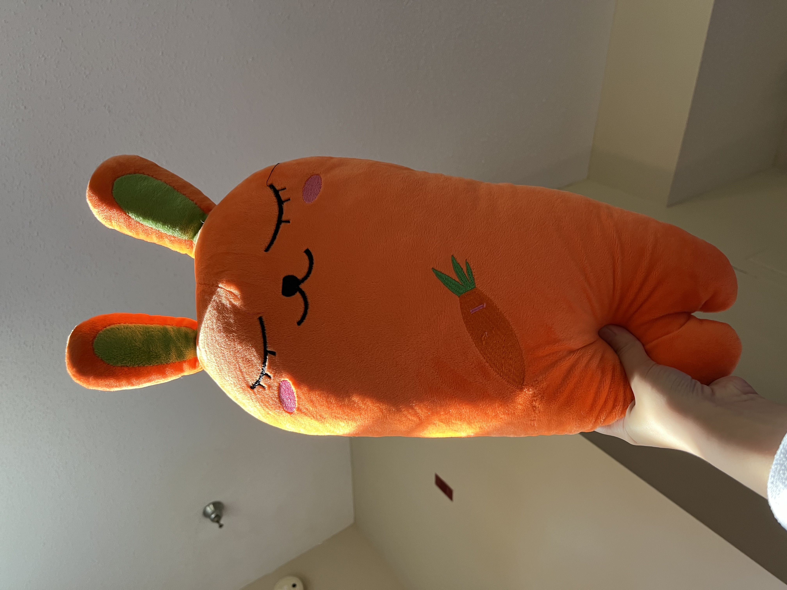

Baudrillard's Level of Removal
Week 7
Hoai Ngoc Vo
Image 1
Citation: J.D. Salinger, “The Catcher in the Rye”
Kind of simulation: Productive copies
The reason I classify this as productive copies is because this is an art that has been used on the cover of specific books and is being produced in mass quantity for cost efficiency and convenience. It would be a natural imitation if this book is the only book and the cover is hand-drawn by artists for only limited edition like back in the day before the industrialization era like in the "Walter Benjamin: The Work of Art in the Age of Mechanical Reproduction" YouTube video. It also serves mainly sales/business purposes.
Image 2
Citation: Hoai Ngoc Vo, “Set of Christmas Candles”
Kind of simulation: Productive copies / Natural imitations
I was a bit confused and indecisive to classify it as one of these two. It is because these models are true that they directly replicate real-life objects. However, these aren't just a mini model but have a purpose which is candles to decorate and give a nostalgic holiday smell. Secondly, these models are products that are being produced in mass quality for business and sales purposes as well, not just the art of art-sake. I think it is somewhere in the middle point.
Image 3

Citation: Hoai Ngoc Vo, “My Carrot Squishy”
Kind of simulation: Skeuomorphic qualities
I don't think this is any kind of simulation because this does not directly represent what it is intended to be. It fits some of the skeuomorph definitions like featuring designs of artifacts in different materials, for example, a real carrot and rabbit are now made out of fabric and stuffed with cotton. It takes certain characteristics of the original, like the color, the ears, etc without fully presenting it as the artifact. The objects only create the "feels" and "reminds" of their original like how the original iPhone has a home button creating the feeling of a machine button for people to want to push it. I also classify it as a Simulacrum because the object brings an aspect of hyper-reality since we know certainly there is no species such as a carrot-(ra) bit.
© 2024 Hoai Ngoc Vo